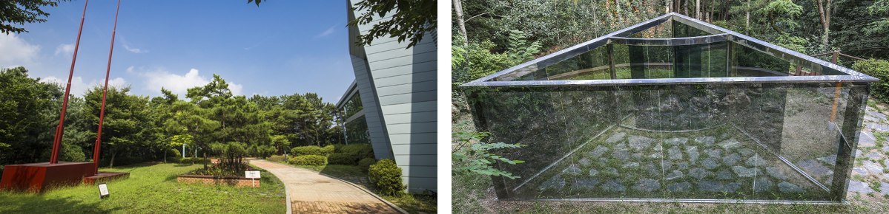

<?include "../../include/head.html"?>
	<?include "../../include/header.html"?>
	<div id="section">
			<div id="s_contents">
						<div class="conbox">
								<!-- section01-->
								<div class="section01">
											<span class="s_title01"><span></span>김포관광</span>
											<div class="thum_wrap">
														<div class="thum_img"></div>
														<div class="thum_box">
																	<span class="thum_txt01">김포관광&nbsp;&nbsp;l&nbsp;&nbsp;북부권&nbsp;&nbsp;l&nbsp;&nbsp;월곶 군하숲길</span>
																	<span class="thum_txt02"><b>월곶 군하숲길 </b>text</span>
																	<div style="padding: 70px 268px 70px 39px;">
																			<span class="thum_txt03">
																						<table>
																							<tr>
																								<th>위&nbsp;&nbsp;&nbsp;&nbsp;&nbsp;&nbsp;&nbsp;&nbsp;치</th>
																								<td>내용준비중입니다.</td>
																							</tr>
																							<tr>
																								<th>문의사항</th>
																								<td>내용준비중입니다.</td>
																							</tr>
																							<tr>
																								<th>공지사항</th>
																								<td>내용준비중입니다.</td>
																							</tr>
																						</table>
																			</span>
																	</div>
														</div>
											</div>
								</div>
								
								<!-- section02-->
								<div class="section02">
											<div class="w_1200">
														<span class="s_title01">소개글</span>
														<span class="s_text01">
														내용준비중입니다.
														</span>
											</div>
								</div>
								
								<!-- section03-->
								<div class="section03">
											<div class="w_1200">
													<ul>
														<li></li>
													</ul>
													<div class="sub_bottom_map">
															<!-- * 카카오맵 - 지도퍼가기 -->
															<!-- 1. 지도 노드 -->
															<div id="daumRoughmapContainer1585104185770" class="root_daum_roughmap root_daum_roughmap_landing"></div>

															<!--
																2. 설치 스크립트
																* 지도 퍼가기 서비스를 2개 이상 넣을 경우, 설치 스크립트는 하나만 삽입합니다.
															-->
															<script charset="UTF-8" class="daum_roughmap_loader_script" src="https://ssl.daumcdn.net/dmaps/map_js_init/roughmapLoader.js"></script>

															<!-- 3. 실행 스크립트 -->
															<script charset="UTF-8">
																new daum.roughmap.Lander({
																	"timestamp" : "1585104185770",
																	"key" : "xnoe",
																	"mapWidth" : "1200",
																	"mapHeight" : "450"
																}).render();
															</script>
													</div>
											</div>
								</div>
								
								<!-- section04-->
								<div class="section04">
											<div class="w_1200">
													<div class="page_move">
															<ul>
																	<li>
																		<a href="../../sub/sub03/sub030302.html" class="prev">
																			<span>이전</span>
																			<br>
																			<span class="subject">
																				김포국제조각공원
																			</span>
																		</a>
																	</li>
																	<li class="list">
																		<a href="../../sitemap/sitemap.html">
																			<span>목록</span>
																		</a>
																	</li>
																	<li>
																		<a href="../../sub/sub03/sub030304.html" class="next">
																			<span>다음</span>
																			<br>
																			<span class="subject">
																				문수산 + 문수산 장대
																			</span>
																		</a>
																	</li>
															</ul>
													</div>												
											</div>
								</div>

						</div>
			</div>

	</div>
	<?include "../../include/footer.html"?>
</body>
</html>